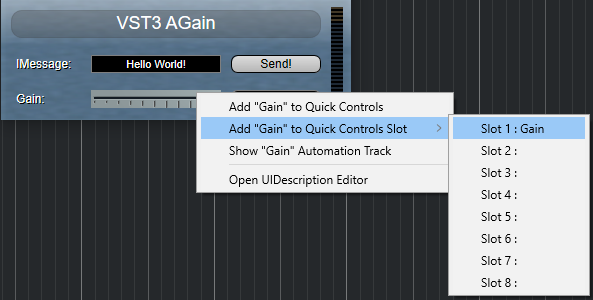
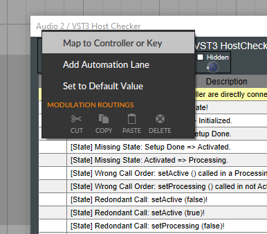

/ VST Home / Technical Documentation
[3.5.0] Context Menu
On this page:
Introduction
Extended host callback interface for an edit controller: Vst:: IComponentHandler3
- [host imp]
- [extends Vst:: IComponentHandler]
- [released: 3.5.0]
- [optional]
A plug-in can ask the host to create a context menu for a given exported parameter ID or a generic context menu. The host may pre-fill this context menu with specific items regarding the parameter ID like "Show automation for parameter", "MIDI learn" etc... The plug-in can use the context menu in two ways:
- add its own items to the menu via the Vst:: IContextMenu interface and call Vst:: IContextMenu::popup(...) to create the pop-up. See below for an example of how to use it.
- extract the host menu items and add them to a context menu created by the plug-in.
ⓘ Note
It is recommended to use this context menu interface, even if you do not add your own items to the menu as this is considered to be a big user value.
See also Vst:: IContextMenu, Vst:: IContextMenuTarget.
Examples
From the host perspective
For example, Cubase adds its owned entries in the context menu opened with right-click on an exported parameter when the plug-in uses createContextMenu. The plug-in itself, in this example, only adds the "Open UIDescription Editor" entry.
ⓘ Note
Plug-ins using VSTGUI automatically have this context menu feature.

Context menu with Cubase

Here an example of what Bitwig Studio is doing with context menus.
From the plug-in perspective
Adding plug-in specific items to the context menu:
//------------------------------------------------------------------------
class PluginContextMenuTarget : public IContextMenuTarget, public FObject
{
public:
PluginContextMenuTarget () {}
virtual tresult PLUGIN_API executeMenuItem (int32 tag)
{
// this will be called if the user has executed one of the menu items of the plug-in.
// It won't be called for items of the host.
switch (tag)
{
case 1: break;
case 2: break;
}
return kResultTrue;
}
OBJ_METHODS(PluginContextMenuTarget, FObject)
DEFINE_INTERFACES
DEF_INTERFACE (IContextMenuTarget)
END_DEFINE_INTERFACES (FObject)
REFCOUNT_METHODS(FObject)
};
// The following is the code to create the context menu
void popupContextMenu (IComponentHandler* componentHandler, IPlugView* view, const ParamID* paramID, UCoord x, UCoord y)
{
if (componentHandler == 0 || view == 0)
return;
auto handler = Steinberg::U::cast<IComponentHandler3> (componentHandler);
if (handler == nullptr)
return;
if (IContextMenu* menu = handler->createContextMenu (view, paramID))
{
// here, you can add your entries (optional)
PluginContextMenuTarget* target = new PluginContextMenuTarget ();
IContextMenu::Item item = {0};
UString128 ("My Item 1").copyTo (item.name, 128);
item.tag = 1;
menu->addItem (item, target);
UString128 ("My Item 2").copyTo (item.name, 128);
item.tag = 2;
menu->addItem (item, target);
target->release ();
//--end of adding new entries
// here the the context menu will be pop-up (and it waits a user interaction)
menu->popup (x, y);
menu->release ();
}
}